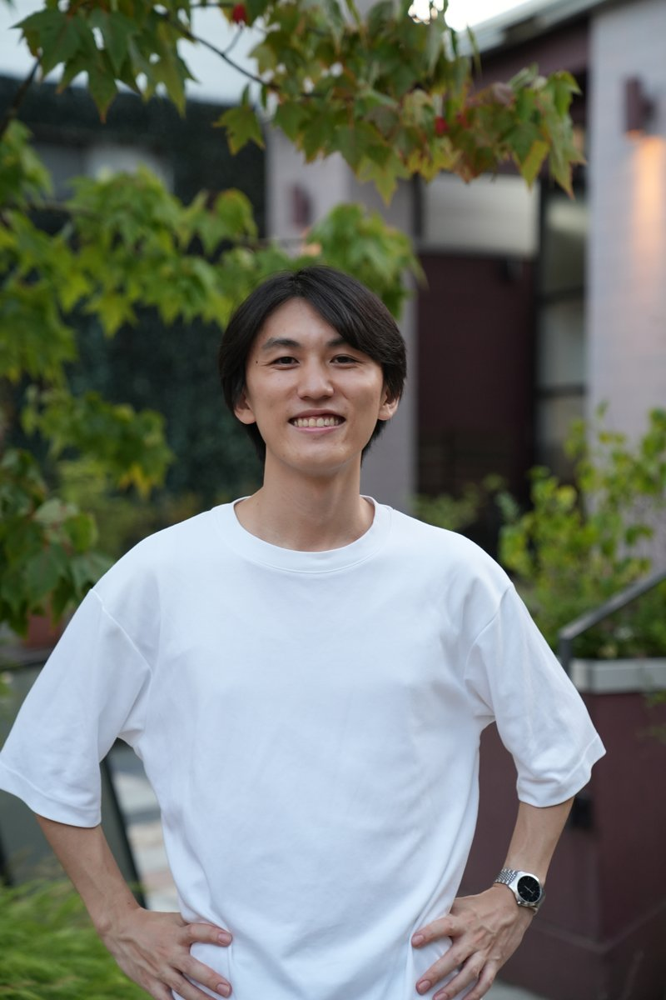
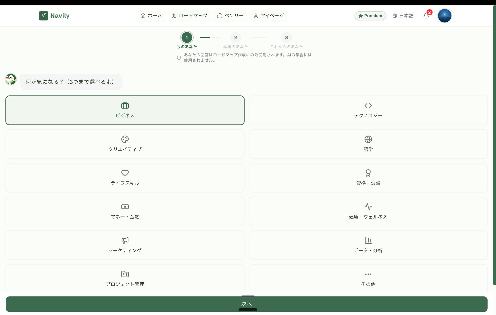
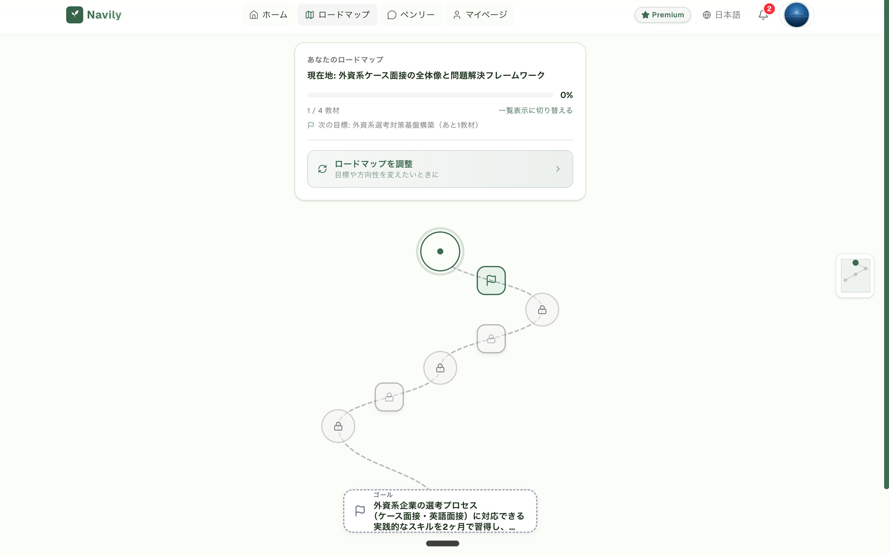
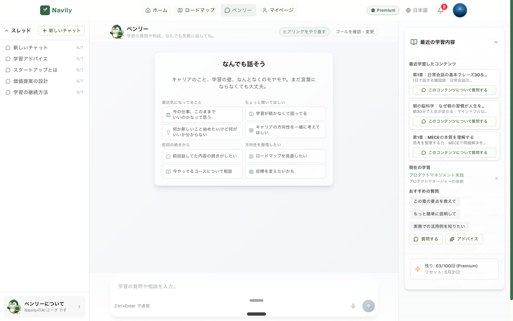

★ メインの活用法
面接対策 ——
AIに面接官役をさせて、
本番同様の練習を毎日。
24時間、何回でも。しかもフィードバック付き。深掘り質問もちゃんと返ってくる。
音声モードだと本番っぽさがかなり出る。
01ChatGPTを開く
02プロンプトを貼る
03質問が返る
04音声モードで本格練習
68%がAIを使ってる。でもほとんどがES添削止まり。
その先にある使い方を知る。
清書 → 壁打ち → シミュレーション。
レベルが上がるほど、やってる人が減る。
模擬面接・自己分析・ケース壁打ち。
コピペで今晩から使える。

24時間、何回でも。しかもフィードバック付き。深掘り質問もちゃんと返ってくる。
音声モードだと本番っぽさがかなり出る。
1回30分、毎日違う問題で実戦演習。AIが出題も面接官役もやってくれる。
異なる立場・性格を指定して、議論シミュレーション。発言タイミングまで練習できる。
| PHASE | Lv.1 清書 | Lv.2 壁打ち | Lv.3 シミュレーション |
|---|---|---|---|
| 自己分析 | 表現の整理 | 強み・価値観の引き出し | 過去経験のロールプレイ |
| 企業研究 | 業界用語の解説 | 企業比較・ポジショニング分析 | 企業の役員役で逆質問 |
| ES | 誤字・表現チェック | ロジックの穴・反論 | 採点者役の評価ロールプレイ |
| 面接 | — | 想定質問の整理 | 面接官役で本番同様の練習 |
| ケース | — | フレームワークの相談 | 出題 → 回答 → 講評 |
| GD | — | 論点整理・想定議題 | 3人役のディスカッション |
| Webテスト | 用語確認 | 解法の解説・パターン化 | 類題出題 → 解答 → 添削 |


